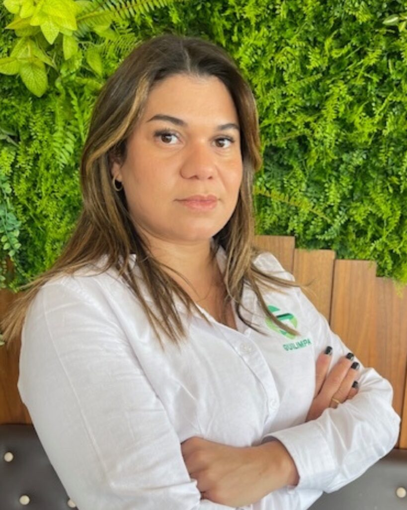
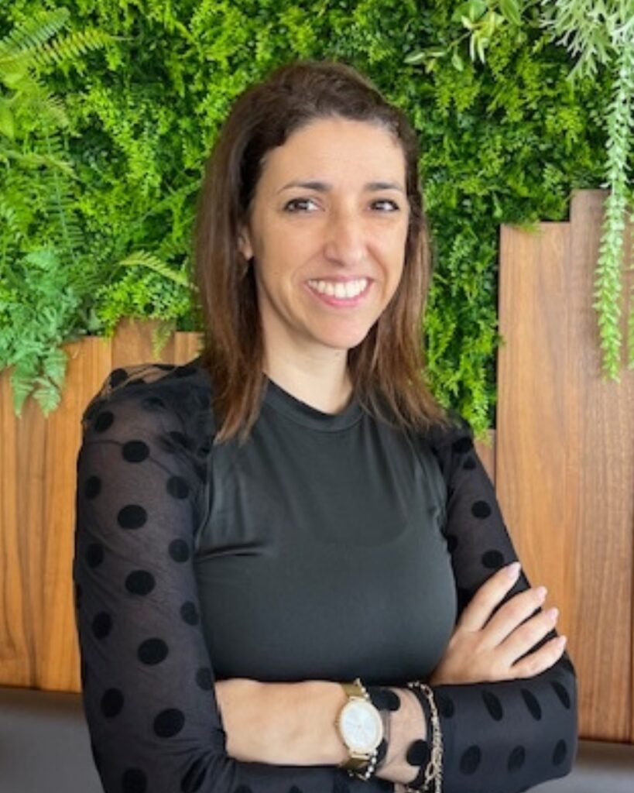
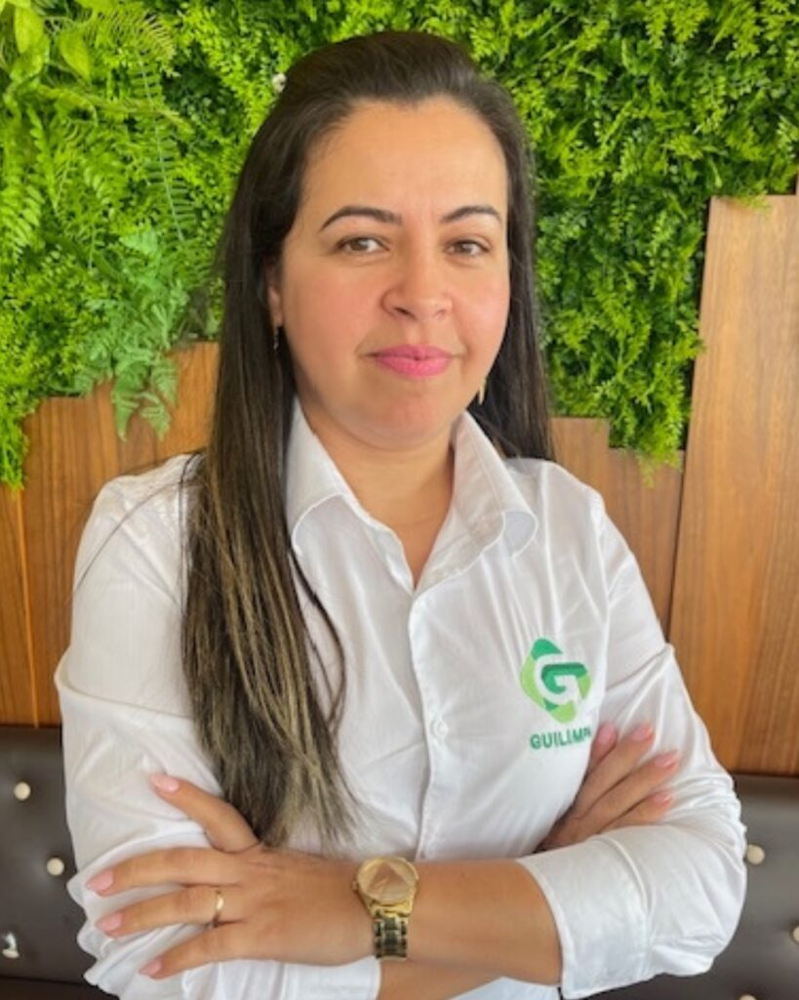
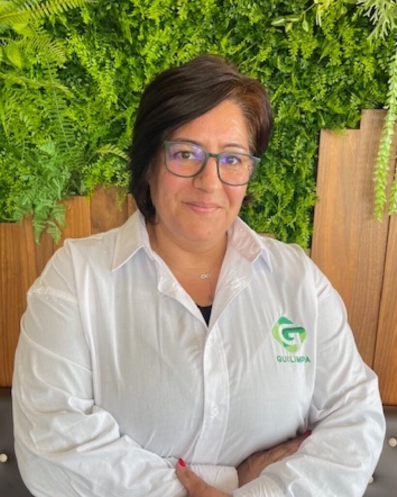

A Nossa Equipa

Guilherme Santos
Sócio Fundador
Virgínia Santos
Sócia Fundadora
Vasco Santos
Sócio Gerente
Gardênia Rocha
Diretora ComercialResponsável pelo desenvolvimento e gestão das relações comerciais, identificação de oportunidades de negócio e garantia de uma presença forte no mercado.

Diana Barroso
Diretora de RH e ContabilidadeResponsável pela área de Recursos Humanos, Contabilidade e Administrativa.

Tatiane Silva
SupervisoraResponsável pela supervisão dos trabalhos executados nos nossos clientes, garantindo a melhor execução dos mesmos e a satisfação dos clientes.

Dina Salema
SupervisoraResponsável pela supervisão dos trabalhos executados nos nossos clientes, garantindo a melhor execução dos mesmos e a satisfação dos clientes.
A Nossa História

Com mais de 40 anos de experiência, a GUI LIMPA destaca-se como referência no setor da limpeza em Leiria. Fundada pelo atual sócio-gerente, Guilherme de Sousa Santos, com 15 anos de experiência na Alemanha, a empresa consolidou-se como pioneira e líder na área.
Inicialmente procurada por construtores civis, a empresa conquistou seu espaço no mercado, estabelecendo-se de forma robusta e transparente. A partir de 1990, firmaram-se os primeiros contratos significativos nos setores bancário e industrial.
Hoje, certificada ISO 9001:2000, a GUI LIMPA mantém-se na vanguarda, procurando constantemente a excelência e oferecendo o melhor aos seus clientes.
Missão
Missão
Proporcionar serviços de limpeza que superem as expectativas dos nossos clientes.
Visão
Visão
Ser reconhecida como a empresa de referência em limpezas de excelência em Portugal.
Valores
Valores
Pautamos a nossa atuação pelo rigor, transparência e confiança mútua.
Objetivos
Objetivos
Garantir qualidade, confiança e profissionalismo em todos os serviços que prestamos.
Vamos trabalhar juntos?
Junte-se à nossa equipa Guilimpa e faça parte de uma empresa comprometida com a excelência e o profissionalismo na área de limpezas. Procuramos talentos que compartilhem nossos valores de integridade, dedicação e trabalho em equipa.
Enviar candidatura